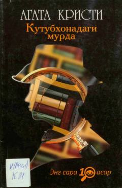

KMMiss Marpl ishtirokidagi qiziqarli va sirli detektiv roman.
Ushbu asar o'tkir suiqasd va sirli jinoyatlarni fosh etishga ixtisoslashgan mashhur detektiv yozuvchi Agata Kristining miss Marpl haqidagi romanidir. Polkovnik Bantryning uyidagi kutubxonadan notanish qiz jasadi topilishi bilan boshlanuvchi voqealar o'quvchini oxirigacha intizorda saqlaydi. Kitob jinoyat sirlarini ochishga qiziquvchi barcha kitobxonlar uchun mo'ljallangan.